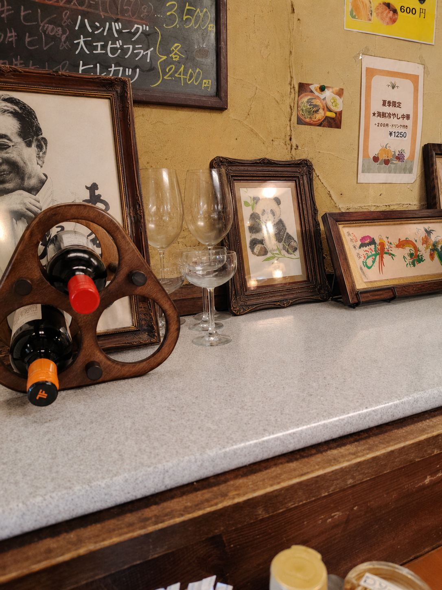
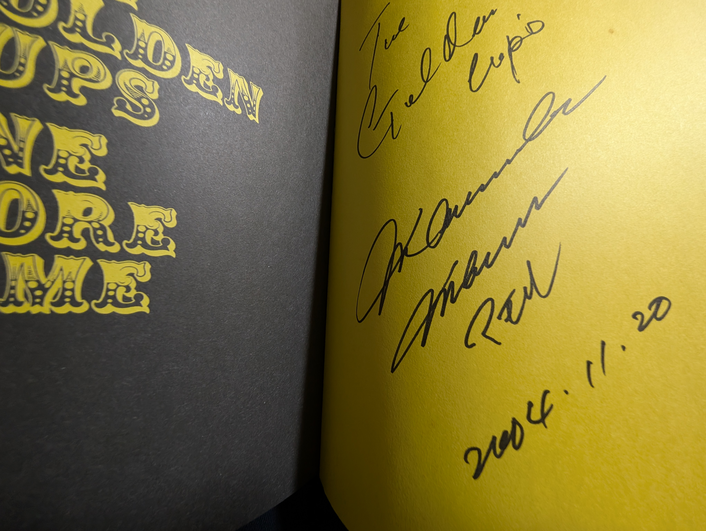
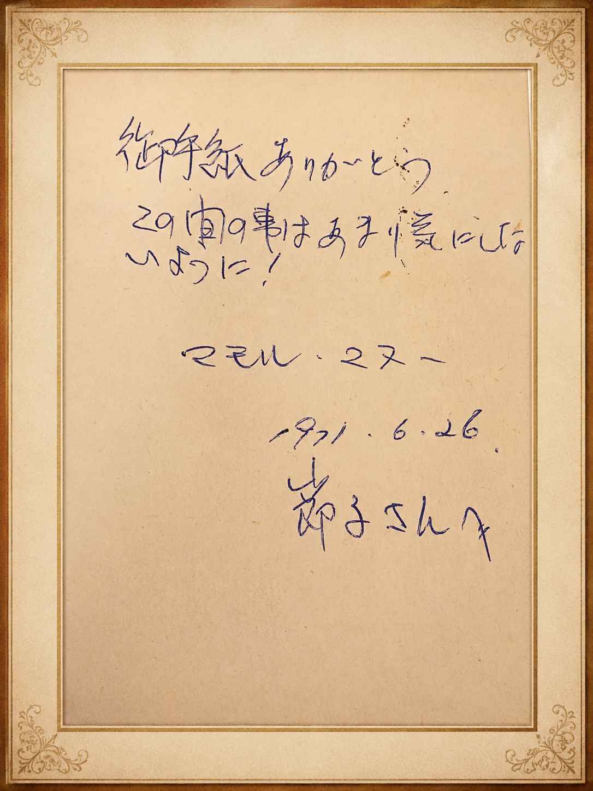
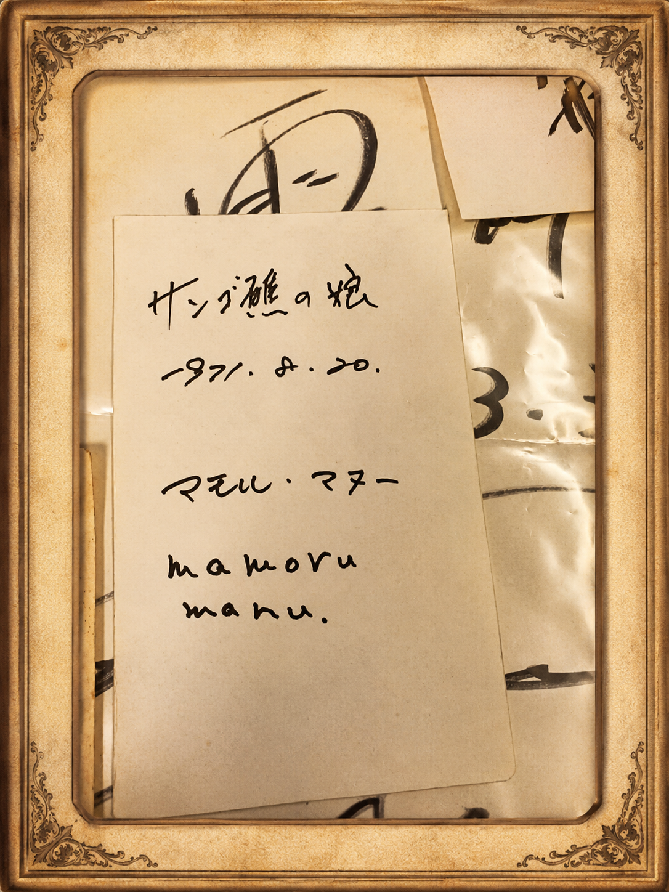
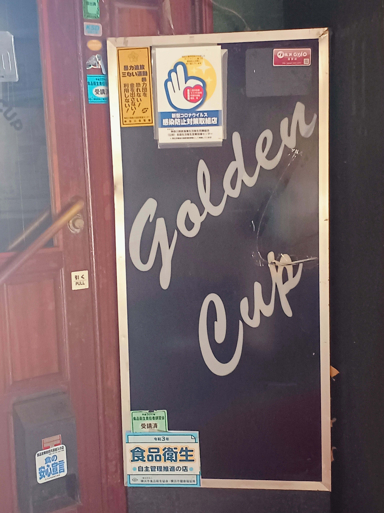

Shared Memories
From time to time, I receive kind messages from people who remember my brother’s voice, The Golden Cups’ music, or the days when they saw him on stage, on television, or in magazines.
Memories of favorite songs, concerts, the atmosphere of Yokohama and Honmoku, or small moments connected to his voice and presence are all meaningful to me.
I would like to include some of these memories little by little, in a way that feels natural as part of my family record.
Contact Page寄せられた思い出
兄の歌声を覚えていてくださる方、ザ・ゴールデン・カップスの音楽を聴いていた方、 当時のライブやテレビ、雑誌などで兄の姿を見てくださった方がいらっしゃいましたら、 心に残っている思い出やお言葉をお寄せいただけましたら、とても嬉しく思います。
何気ない一言や短い思い出も、家族にとってはとても大切な記憶になります。 皆さまの中に残っている小さな場面を、聞かせていただけたらと思います。
お寄せいただいた思い出も、家族の記憶のひとつとして、このページに大切に残していきます。
Contactページへ皆さまへ
お忙しいなか、こちらへ立ち寄ってくださり、 あたたかな投稿や思い出をお寄せいただき、本当にありがとうございます。
皆さまからいただくお言葉は、家族にとって大切な記憶のひとつとして、 心に残るものです。
思い出・お写真・動画リンクをお寄せください
兄との思い出、当時のお写真、共有していただける動画リンクなどがありましたら、 よろしければ下記フォームよりお送りください。
お寄せいただいた内容は確認のうえ、必要に応じてこのページで紹介させていただく場合があります。 掲載を希望されない場合は、その旨もフォーム内でお知らせください。
思い出・お写真・動画リンクを送るCocoKelly様より

オグラシズコ様より
初めまして！
長い髪の少女のドラムを叩いている兄の映像をお送りいただきました。
懐かしい思い出は、いつまでもたっても忘れることはありません。
貴重な映像とあたたかなメッセージをお寄せいただき、ありがとうございます。
まゆみん様より

いつも優しい💛暖かいお言葉を、ありがとうございます。
Iwamuraさんより：貴重なお宝
Iwamuraさんから、とても貴重なお宝をシェアーしていただきました。
長い年月を越えて大切に残してくださった、兄マモル・マヌーの直筆メッセージやサインです。 家族にとっても、とてもありがたく、心に残る大切な記録です。



オグラシズコ様より：本牧を訪ねて

「足跡をたどる旅」、素敵ですね。楽しい旅になりますよう、兄に代わって、私も心より願っております。
Favorite Songs
Memories about favorite songs, records, or moments when his voice stayed in someone’s heart may be added here.
好きだった曲
好きだった曲、よく聴いていたレコード、兄の声が心に残っているという思い出などを、 こちらに少しずつ残していきます。
Concert Memories
Memories from concerts, live performances, television appearances, or magazines can be kept here when they feel right for this family record.
ライブや当時の思い出
ライブやテレビで見た時のこと、雑誌で見た兄の姿、 当時の空気が伝わるような思い出を、自然な形で残していけたらと思います。
Small Moments
Small memories, kind words, or simple moments connected to my brother can also be part of this record.
小さな記憶
何気ない言葉や、ふと思い出された表情、 兄にまつわる小さな出来事も、家族の記録として大切に残していきたいです。